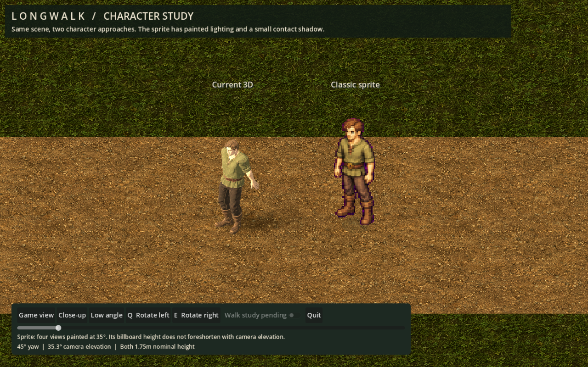
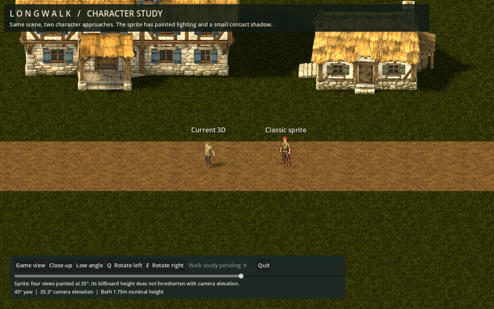
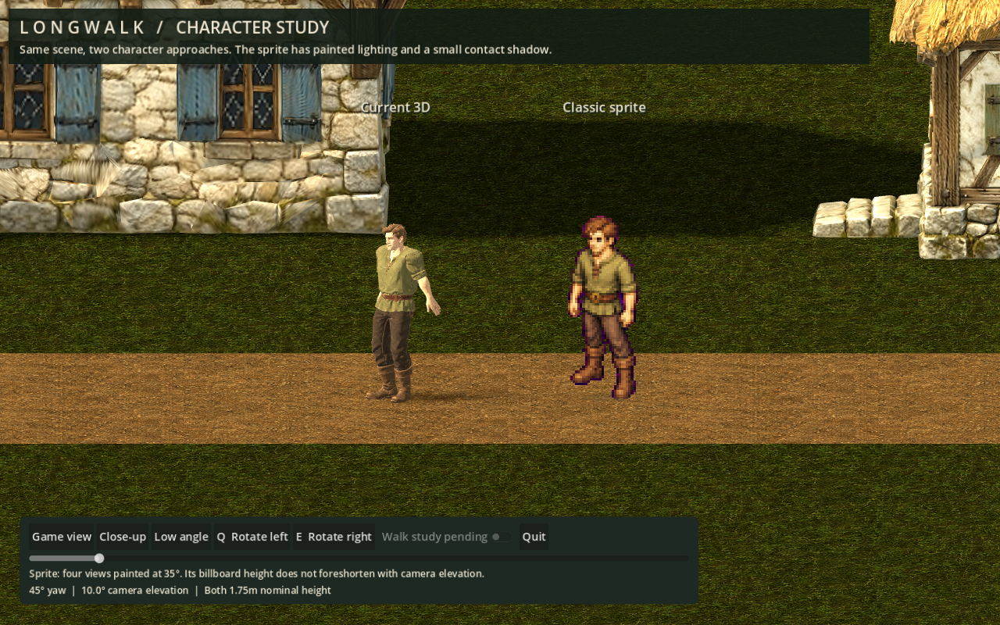
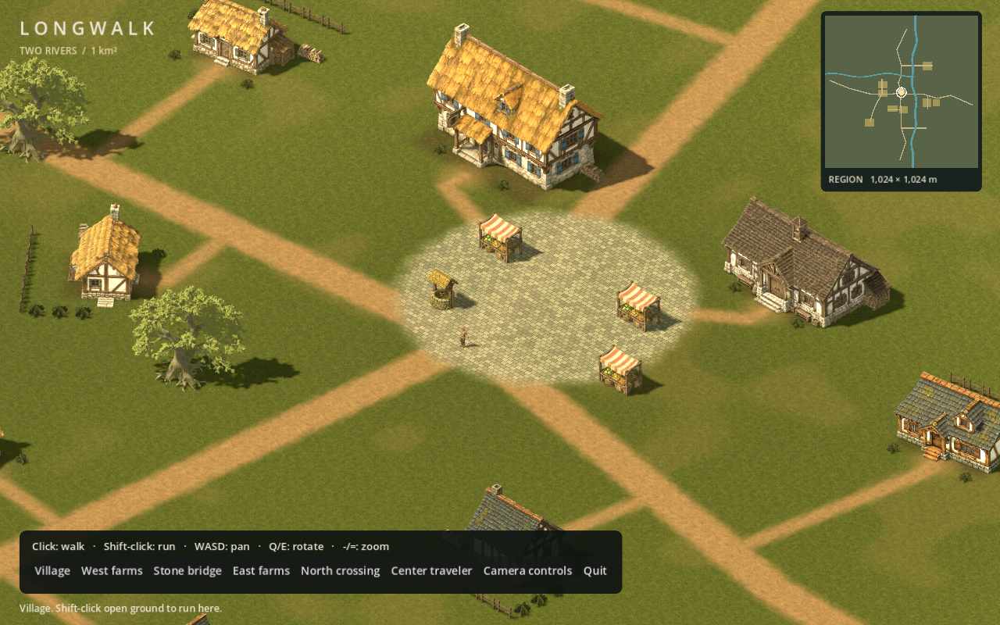
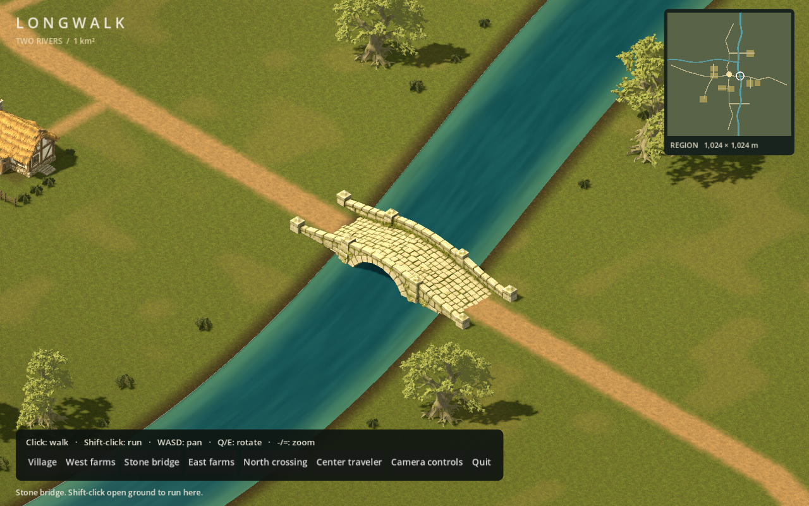
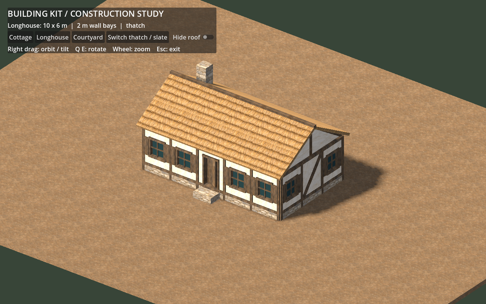
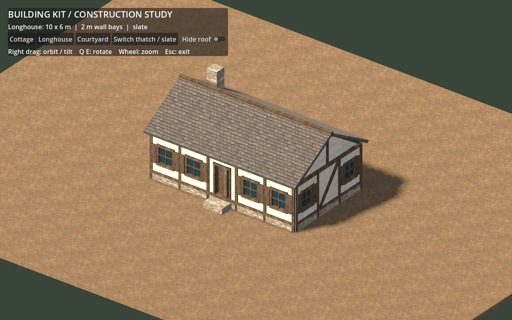
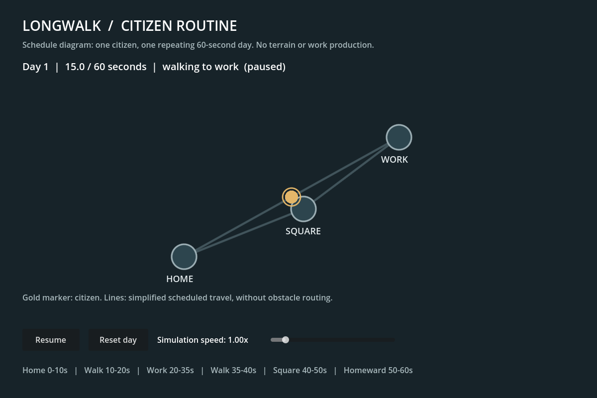

LONGWALK / LOCAL PROTOTYPE STUDIES
A village to explore.
Two ways to draw its people.
Actual Godot captures from the new builds. Start with the character comparison, then try the larger village. These are first cuts for playtesting.
Current 3D or classic sprite?
The same character identity, nominal 1.75m height and shared scene. Switch views to see the camera tradeoff. The original 3D pose is preserved for comparison.



Close-up: inspect silhouette, face and relaxed sprite arms.
Current 3D
Camera elevation and lighting act on a full body. The arms and pose still need work. A better rig and animation pass could improve this version substantially.
Classic sprite
Strong painted silhouette with four facing views. Its painted perspective and light remain fixed as the camera lowers. A smooth orbit needs more views or limits on the camera.
The sprite stays camera-facing, so screen height does not foreshorten like 3D. Walk drafts failed visual review and are excluded from the viewer. This compares appearance, not finished animation quality.
Two Rivers: 1024 × 1024 metres
Nineteen buildings, a market square, eight farm plots, four bridges and wooded countryside. Click to walk, Shift-click to run. WASD pans, Q/E rotates, minus/equals zooms, and Space returns to the traveler.

The current human and foliage remain provisional. No server, saves or living population yet.See the countryside

A reusable building kit
Three layouts assembled from shared 2m wall bays, with thatch/slate and roof-cutaway controls. This construction study is visibly simpler than the village landmarks.

Thatch
SlateA citizen's day, isolated
A working schedule diagram moves one citizen between home, work and the square. It can pause and change speed. This tests the headless simulation boundary; it is not an NPC integrated into the village.
See the routine viewer

After the village verdict
The proposed next proof is one Docker-hosted world, two clients and one changed tree that survives restart. Reconnect and recovery belong in that first slice. Kubernetes remains the target; distributed regions and messaging wait for measured need.
The foundation supplement records ordinary working lives, skills learned through practice, rare magic, relationships and a changing landscape. Lifespans, inheritance and other unresolved systems remain open.